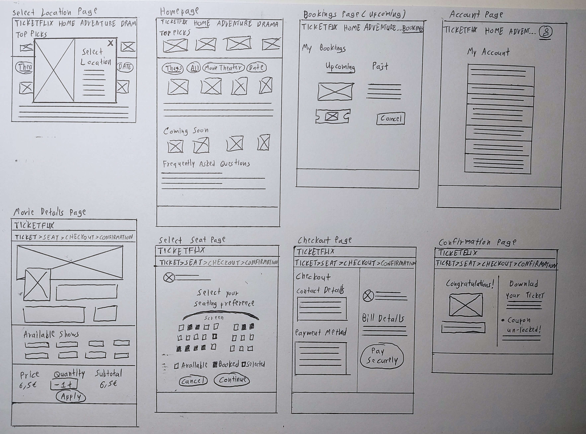

UX/UI Design
Content Strategist
Figma, Photopea
DurationFebruary 2025
2 Days
Preface
Skyscanner is a popular flight search engine that allows users to find and compare airfare across multiple airlines. As someone who frequently uses this app for trip planning, I wanted to explore potential improvements in its user experience and interface, focusing on the journey from the homepage to the flight details page.
❛❛ Skyscanner app is used by millions of user. To redesign something that that is already have a existing user base is itself is a challenge.
With limited time following a typical design process was challenge. When it came to user research I could not do more. But I did talk to some friends and asked their existing experience of using Skyscanner app and their pain-points.
I then began with careful observation of each screen, completing the desired task, going back and forward, taking notes on my initial thoughts like what's missing and what can be done to make user experience more intuitive. My goal was to refine the clarity, hierarchy, and efficiency of the experience while keeping familiar patterns intact.
Problems and Initial Findings
UX Principles
Throughout the design process, I applied key UX principles, particularly Fitts's Law and Hick’s Law, to enhance usability and efficiency.

Paper Wireframes
When ideating designs through paper wireframes I prioritized quantity over quality.
Wireframes and Low-Fidelity Prototype
Mainly going off of my paper wireframes I made some adjustments and refinements to it's digital equivalent.


Mockups and High-Fidelity Prototype
With these insights, I was ready to refine the visual details and bring the TicketFlix website to life. I focused on creating a modern and engaging interface that aligns with the brand’s identity while ensuring a seamless browsing and booking experience. The design incorporates a clean layout, a vibrant yet balanced color palette, and intuitive navigation to enhance user interaction and accessibility.

The final product of this project is a clickable high-fidelity prototype hosted through Figma's prototype feature.

Demo clickable prototype here.
The TicketFlix website extends the platform’s accessibility, allowing users to book movie tickets effortlessly from any device. By focusing on an
intuitive layout and seamless navigation, it enhances the online booking experience and provides an alternative to mobile apps for those who prefer browsing on a larger screen.
Throughout this project, I deepened my understanding of designing for different platforms and the importance of adapting user flows based on user preferences. This experience
reinforced the significance of usability testing and iterative design in crafting an efficient and enjoyable digital experience. Moving forward, further refinements based on
additional user feedback could further enhance the website’s functionality and accessibility.